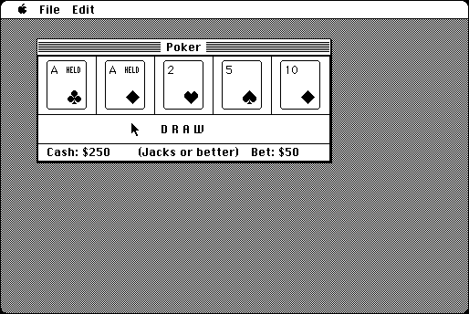

Download
poker.zip (41K) Poker 3.0 repackaged into a zipped hfs disk image and checksum file. The disk image can be mounted with Mini vMac.
poker.sit.hqx (49K) Poker 3.0 in the original format.
copyright: John Stiles
mod date: Sep 8, 1998
license: public domain, former shareware
last known url
(gone)
A "game of five-card draw, similar to a Las Vegas poker machine."

If you find these downloads useful, please consider helping the Gryphel Project, which hosts them.
Here are the md5 checksums for the downloads, signed with Gryphel Key 5:
--------- GRY SIGNED TEXT --------- 216ce889d3aabb67478975524642f6e3 poker.zip 5542f7abcc2d3fcb5e12526521beb667 poker.sit.hqx ------- BEGIN GRY SIGNATURE ------- Gry/4Xa8CFcUzxdN/D04KCPZd45WX0cYg2/EGk0noplIPy03Kbwfiv+kUI0LIZEt GXCcg1I9f88y6zD3XRMC6h/Zz1sm0tyswn9WPCTMURdXUmMHJI9mRSf5acg1ITgA Bom5wKckOh8cRlf+tZQFzLuyZFlfviMwUsN0lCZxQzt1MHqQOwD8lE2G8vVeXUBE -------- END GRY SIGNATURE --------